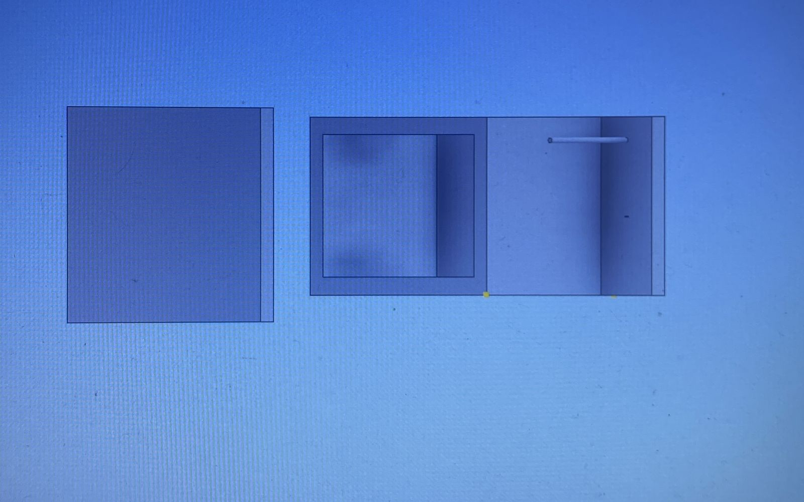

Tendo em vista o requerimento da empresa Kon Filaments para uma máquina que transforme garrafas pet em filamentos 3D, nós da KonvexJr criamos um protótipo que irá resolver as dores do nosso cliente.
No dia 18 de junho, foi realizada a reunião de diagnóstico com a lead Amanda ela nos comentou do porque de vir até a konvex, nos contando sobre o seu problema e como podemos resolver. Com todas as informações necessárias nosso grupo partiu para o processo de montagem do MVP.
O maquinário será composto pela parte elétrica e por; componentes em geral dos quais serão citados abaixo:
Vai pa porra loko